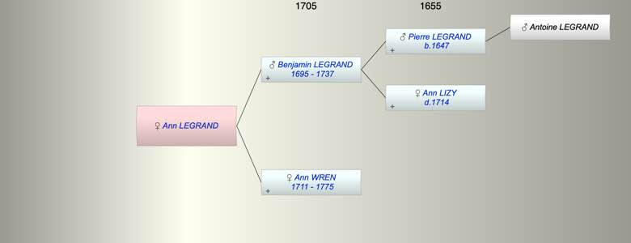

| [Index] |
| Ann LEGRAND |
|  |
| Parents: |
| Benjamin LEGRAND (1695 - 1737) |
| Ann WREN (1711 - 1775) |
| Siblings (3): |
| William LEGRAND |
| George LEGRAND (1730 - ) |
| Robert LEGRAND (1733 - ) |
| Events in Ann LEGRAND's life | |||||
| Date | Age | Event | Place | Notes | Src |
| Oct 1737 | Death of father Benjamin LEGRAND (aged 42) | ||||
| 06 Sep 1775 | Death of mother Ann WREN (aged 64) | aged 64 | |||
| Ann LEGRAND died (no date) | died unmarried | ||||
| Created on a Mac™ using iFamily for Mac™ on 8 Oct 2023 |